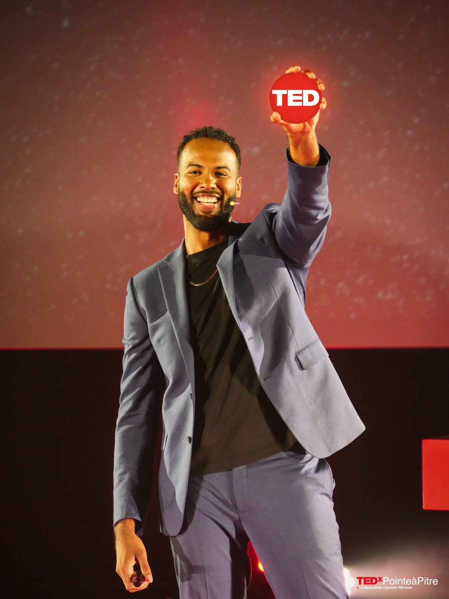
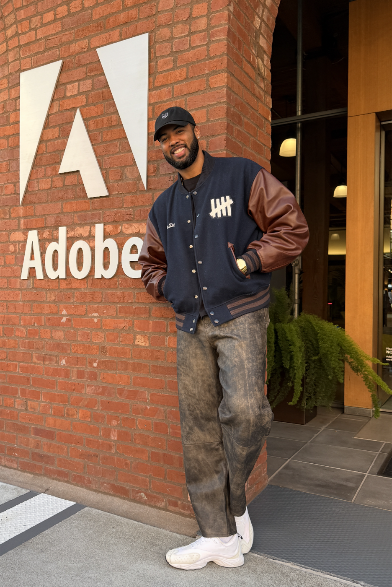
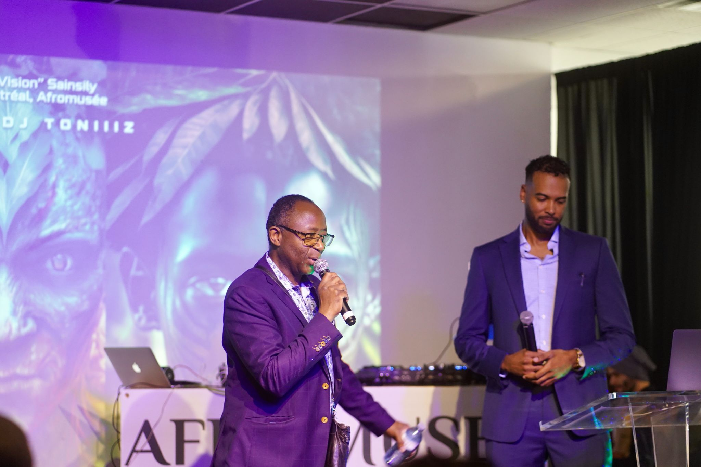
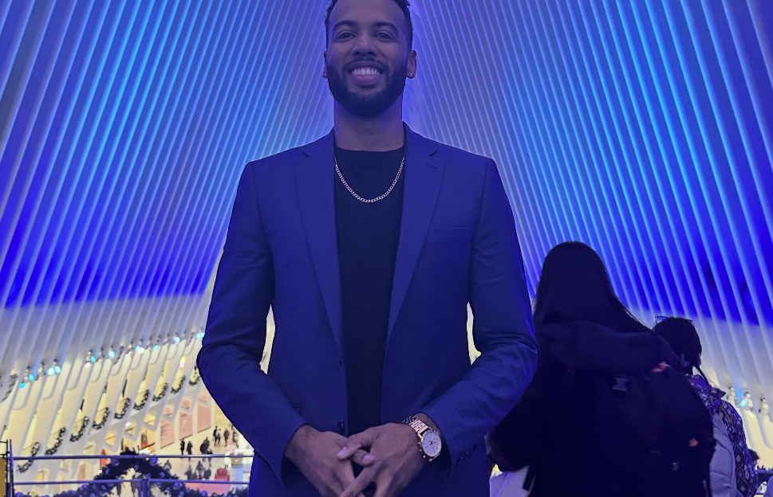
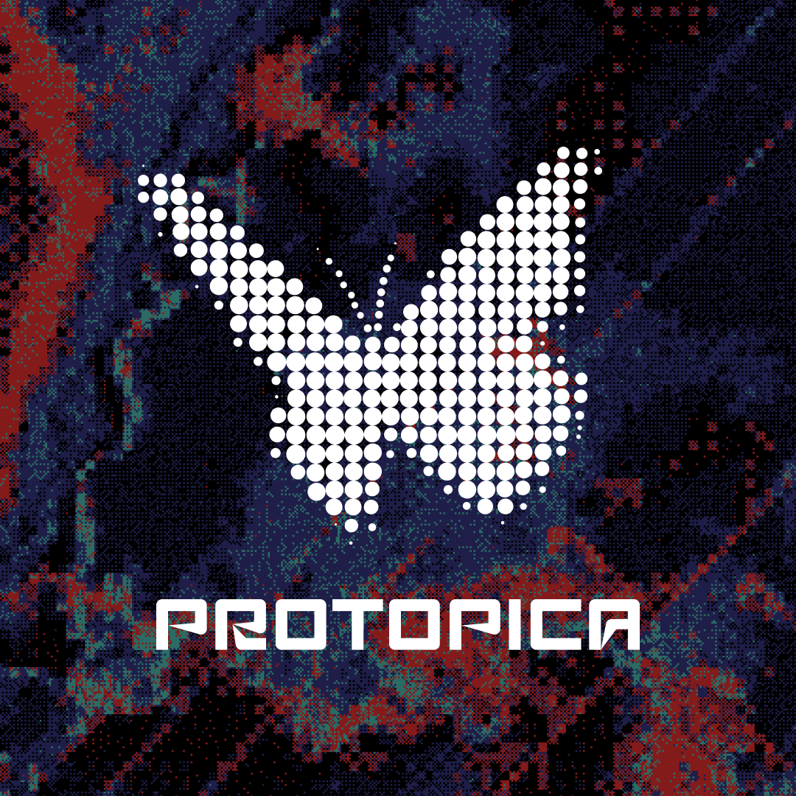
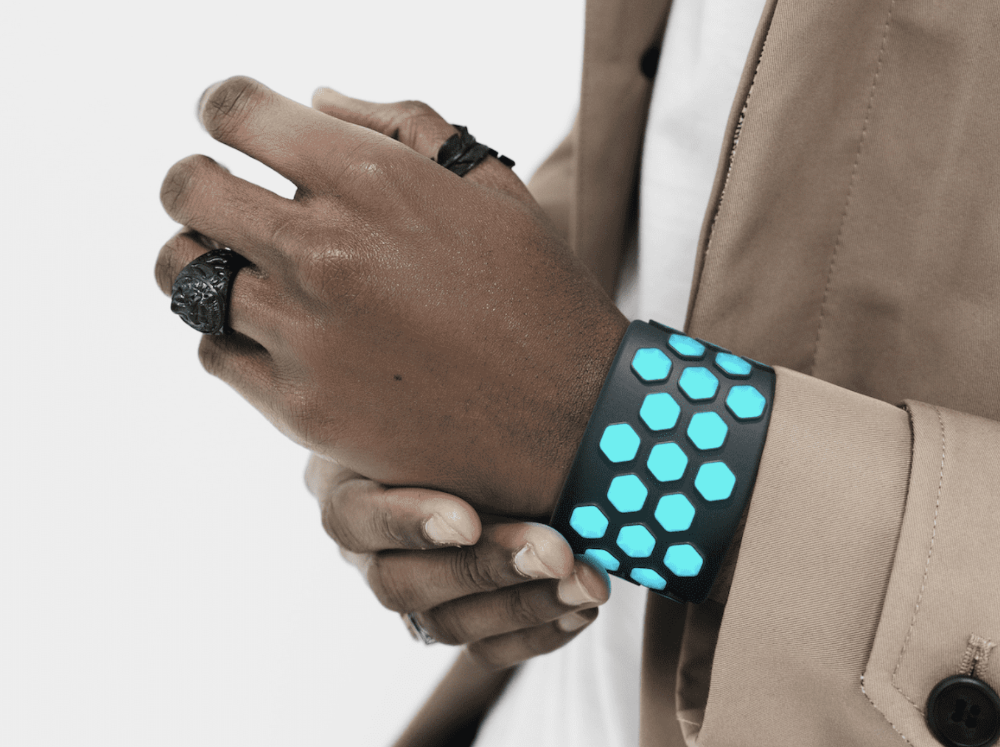
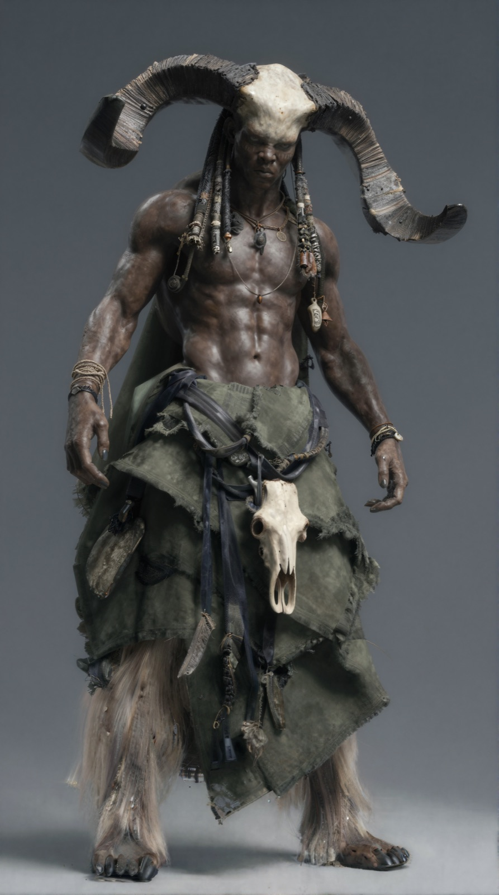

Products, games, responsive systems and high-traffic digital experiences.
Manuel Sainsily Creative Director & Speaker
I design, teach
& speak about
art + tech + culture.
Human-centred ideas and experiences across AI, XR, 3D, BCI and haptics.


Impact / Data
Human-centered
global impact.
- 20M+
- People Inspired
- 100K+
- Exhibition Audience
- 150+
- Talks & Workshops
- 97.1%
- Speaking CSAT
Focus / Practice
Three things I do.
One point of view.
Exhibitions / Installations
Immersive worlds
people step into.

NYC · 2025-10-09 - Present
ARTECHOUSE
A 270° immersive 3D ocean world with spatial audio surrounding visitors with a Caribbean future.
- Audience
- 40K+
- Technology
- 3D/18K
- Sponsor
- OTOY

Barcelona · 2025-06-12
Sónar+D
An EEG-driven installation where mental state shaped the visuals in real time.
- Audience
- 52K+
- Technology
- BCI/EEG
- Sponsor
- Neurosity

Vancouver · 2024-09-27
VIFF
Protopica expanded from GenAI cinema into an immersive platform rooted in cultural world-building.
- Audience
- 1.5K+
- Technology
- BCI/EEG
- Sponsor
- Signals

NYC · 2024-07 - 2025-02
OpenAI Sora Selects
First OpenAI artists to release an AI film screened at the Metrograph Theatre.
- Audience
- 1M+
- Technology
- AI Film
- Sponsor
- OpenAI

Montréal · 2022-12-01
OpenAI x CaFu
A Caribbean Futurist exhibition blending XR, AI and traditional live art performances.
- Audience
- 1K+
- Technology
- AI/Art
- Sponsor
- Dall-E

NYC · 2022-10
Meta SparkAR
1st haptics SparkAR filter exhibited at the Oculus Gallery in the NYC WTC.
- Audience
- Private
- Technology
- SparkAR
- Sponsor
- SparkAR
Lab / Experiments
I also like to
build cool things.



Teaching / Academia
University lectures
& workshops.
Clients / Partners
Trusted by
industry leaders.

Featured In

Career / Full-Time Positions
One career.
Many interfaces.
-
FoundationUI/UX & Product Design -
IBM iXXR Design Lead · Canada Built an extended-reality design practice around human-centred interfaces.
-
ImmersionUX Design Lead · Haptics Designed how people feel digital interactions through touch.
-
UnityXR Design Lead · Sr. Advocate Led teams, shaped real-time 3D products and took the work on stage.
-
AdobeSr. Creative Technologist Prototyping next-generation creative workflows across AI and design systems.
Testimonials / Quotes
What collaborators
remember.
“Manu's lecture at my Stanford d.school class on AI prototyping and XR was truly inspiring. He brought a rare blend of visionary thinking and practical know-how, and it was incredible to see students immediately applying his methods with both creativity and confidence.”
“Manuel's presentations are simply the best! He gave a series of guest lectures on AI and XR for cultural heritage preservation, and every single time completely wowed the audience. Amazing content and fantastic delivery!”
“It was amazing to see how artists Manuel Sainsily and Will Selviz used Sora as part of their creative process for their short film Protopica — a powerful demonstration of the transformative role AI is playing in our society.”
“Manuel and Will's collaboration with OpenAI demonstrates how AI can be a powerful tool for cultural preservation. Their work pushes the boundaries of what's possible while respecting and preserving the richness of our global cultural heritage.”
“Manu has an unusual mix of talents — a skilled designer who can code, but what sets him apart is his leadership qualities. He cares deeply about team unity and consistently communicates with empathy, balance, and encouragement.”